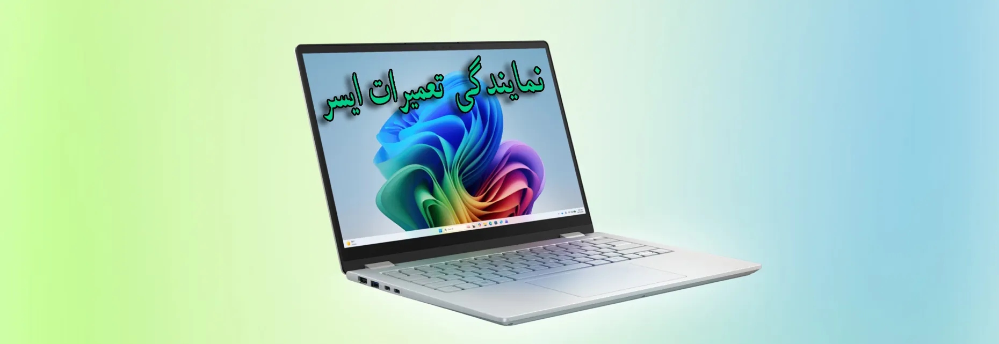
نمایندگی تعمیرات ایسر در تهران
نمایندگی تعمیرات ایسر برتر سرویس، نقطه ی اتصال مستقیم کاربران ایرانی با خدمات جامع و استاندارد برند بین المللی Acer است. این مجموعه با ساختاری منسجم و پشتیبانی برندمحور، نقش کلیدی در ارائه خدمات پس از فروش، مشاوره های تخصصی، پیگیری گارانتی، تامین قطعات اصلی و پشتیبانی فنی ایفا می کند.
گستردگی خدمات نمایندگی ایسر تنها محدود به تهران نیست. کاربران در شهرهایی مانند کرج، مشهد، اصفهان و سایر مناطق نیز می توانند از طریق راه های رسمی، به خدمات پشتیبانی، ثبت درخواست و مشاوره تخصصی دسترسی داشته باشند. نمایندگی مرکزی ایسر با در نظر گرفتن نیاز کاربران در سراسر کشور، سعی دارد تجربه ای آسان، سریع و قابل اعتماد را برای مشتریان محصولات این برند جهانی رقم بزند.
شماره تلفن نمایندگی acer در تهران 02191300348 میباشد که شما عزیزان میتوانید از ساعت 9 صبح تا 19 و از شنبه تا پنجشنبه با ما تماس حاصل فرمایید تا از پشتیبانی خدمات پس از فروش ایسر بهرمند شوید.
- پیک رایگان در تهران
- گارانتی کتبی تعمیرات
- قطعات اورجینال Acer
- عیبیابی تخصصی
پوشش کامل تعمیرات ایسر در تمام مناطق تهران
ما کل مناطق تهران را با ارسال پیک رایگان پوشش میدهیم. در هر کجای تهران باشید با شما یک تماس فاصله داریم و بعد از تماس و ثبت سفارش در کمتر از نیم ساعت پیک دستگاه ایسر شما را دریافت خواهد کرد.
همچنین میتوانید به صورت حضوری به شعب برتر سرویس مراجعه کنید. جهت رفاه حال شما نمایندگی ایسر دو شعبه حضوری در تهران دارد.
آدرس شعب حضوری
آدرس نمایندگی مرکزی: تهران، خیابان مطهری، ابتدای خیابان قائم مقام فراهانی جنوبی، پلاک 158، ساختمان برتر سرویس
آدرس نمایندگی غرب: تهران، سعادت آباد، میدان کاج، کوچه دوازدهم علی اکبر، پلاک 30، مجتمع اداری کسری، طبقه اول واحد 5
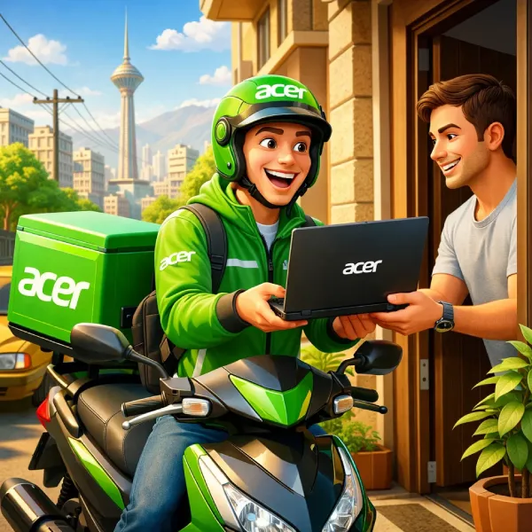
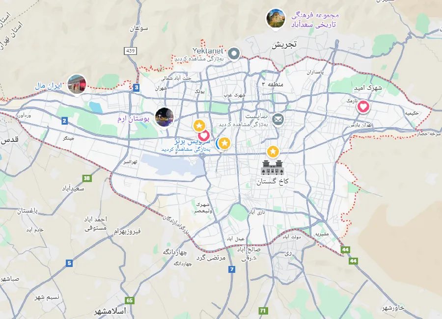
خدمات پس از فروش ایسر در تهران در تمامی مناطق 22 گانه تهران با پیک رایگان و گارانتی Acer
ویژگیهای نمایندگی تعمیرات ایسر (برتر سرویس)
- گارانتی کتبی تعمیرات ارائه ضمانت نامه معتبر Acer برای خدمات .
- استفاده از قطعات اورجینال Acer تأمین قطعات با کیفیت و اصلی به صورت مستقیم.
- عیب یابی تخصصی بررسی دقیق سخت افزار و نرم افزار برای رفع ریشه ای مشکل.
- تکنسین های با تجربه تعمیرات توسط تکنسین های آموزش دیده.
- تضمین مناسب ترین هزینه اعلام هزینه دقیق و شفاف بعد از عیب یابی و قبل از تعمیر.
- سرعت در تعمیرات تعمیر دستگاه در سریعترین زمان ممکن با تجهیزات پیشرفته
- ارائه فاکتور و گزارش تعمیر شفافیت در قطعات و خدمات انجامشده در نایندگی تعمیرات ایسر
خدمات تعمیرات ایسر
روی هر خدمت کلیک کنید تا به بخش توضیحات همان خدمت در همین صفحه بروید.
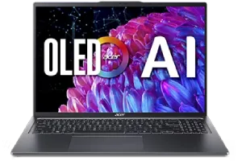
تعمیر لپ تاپ ایسر
عیب یابی، تعمیر مادربرد، تعویض قطعات، رفع مشکلات تصویر و شارژ.
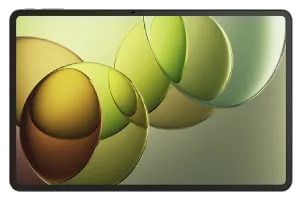
تعمیر تبلت ایسر
مشکلات تاچ، شارژ، باتری، برد، و تعویض نمایشگر.
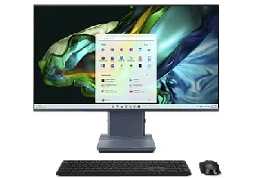
تعمیر کامپیوتر ایسر
عیب یابی سیستم، پاور، مادربرد، بوت، کندی و ارورهای رایج.
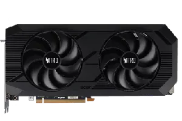
تعمیر کارت گرافیک ایسر
عیب یابی، تست حرارتی، تعمیرات تخصصی و رفع مشکلات تصویر.
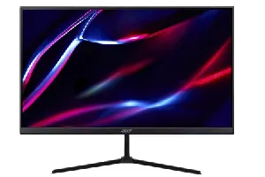
تعمیر مانیتور ایسر
تعمیر بک لایت، پنل، مین برد و مشکلات روشنایی/تصویر.
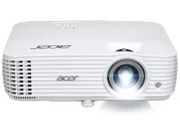
تعمیر ویدئو پرژکتور ایسر
مشکلات لامپ، تصویر، فن، پاور و سرویس دورهای.
مراحل ثبت سفارش تعمیرات ایسر
ثبت درخواست تعمیر
تماس تلفنی یا ثبت درخواست آنلاین از طریق اپلیکیشن .
ارزیابی اولیه دستگاه
شرح مشکل + بررسی اولیه .
تعیین نحوه تحویل
پیک رایگان در تهران یا مراجعه حضوری.
تأیید هزینه و زمان تعمیر
اعلام هزینه بعد از عیب یابی و دریافت تأیید شما.
تعمیر دستگاه
تعمیر تخصصی با قطعات اورجینال (در صورت نیاز).
تست و بررسی کیفیت
کنترل عملکرد دستگاه بعد از تعمیر.
اعلام آماده بودن دستگاه
اطلاعرسانی برای تحویل.
تحویل و گارانتی
تحویل دستگاه + ارائه گارانتی کتبی تعمیرات.
تماس و ثبت سفارش فوری
برای مشاوره و استعلام هزینه تعمیرات ایسر، همین الان تماس بگیرید.
تعمیر لپ تاپ ایسر
لپ تاپ های برند ایسر سال هاست که در بازار ایران جایگاه ویژه ای میان کاربران پیدا کرده اند؛ چه در حوزه کاربری روزمره، چه استفاده های تخصصی. در همین راستا، نمایندگی تعمیرات ایسر با رویکردی مشتری محور و استفاده از تجهیزات پیشرفته، شرایطی را فراهم کرده تا کاربران بتوانند از خدماتی کاملاً هماهنگ با استانداردهای شرکت Acer بهره مند شوند.
در این نمایندگی تعمیرت ایسر بررسی و رفع ایرادات مختلف لپ تاپ های ایسر توسط کارشناسان آموزش دیده و باتجربه صورت می گیرد. از تشخیص دقیق مشکل گرفته تا ارائه راه حل های اصولی و قابل اعتماد، همه چیز در قالب فرآیندهایی ساختاریافته و با نظارت تیم فنی نمایندگی Acer انجام می شود. مواردی مانند مشکلات عملکردی، اختلالات سخت افزاری یا حتی ایرادات جزئی، با دقت و شفافیت در همین مجموعه مورد رسیدگی قرار می گیرند.
آنچه نمایندگی ایسر تهران را از سایر مراکز متمایز می کند، تعهد به ارائه خدمات همراه با گارانتی معتبر ۶ ماهه است. این یعنی اگر دستگاه شما در مدت تعیین شده دچار اختلال مجدد شود، می توانید بدون پرداخت هزینه مجدد، از خدمات رایگان بهره مند شوید. ما این پشتیبانی را نه فقط به عنوان خدمات تعمیر، بلکه به عنوان بخشی از تجربه ای مطمئن و حرفه ای در حوزه خدمات پس از فروش در نظر گرفته ایم.
- تعمیرات تخصصی مادربرد
- رفع مشکل شارژ و باتری
- رفع صفحه سیاه / تصویر
- سرویس فن و خنک کاری
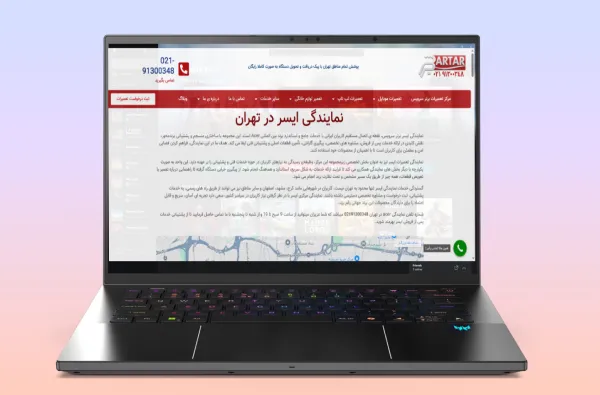
ایرادات رایج لپ تاپ ایسر (علت + پیشنهاد اقدام)
۱)لپ تاپ روشن نمیشود یا بالا نمیآید
علت های رایج: مشکل آداپتور/برق، باتری، مدار پاور، یا ایرادهای نرمافزاری/بوت.
- پیشنهاد: پاور ریست (Power Reset)، تست آداپتور و پریز، جدا کردن دستگاههای جانبی.
- اگر چراغها روشن است ولی هیچ واکنشی نیست: احتمال ایراد مدار پاور یا مادربرد.
۲) باتری شارژ نمیشود یا «Plugged in, not charging»
علت های رایج: آداپتور/کابل معیوب، پورت شارژ، باتری فرسوده، درایور یا تنظیمات برق.
- پیشنهاد: تست پریز سالم، حذف محافظ برق برای تست، بررسی سلامت کابل و سوکت شارژ.
- در برخی مدلها: ریست باتری یا پاور ریست میتواند کمک کند.
۳) صفحه سیاه (Black Screen) یا تصویر نمیآید
علت های رایج: مشکل نمایشگر/کابل تصویر، درایور گرافیک، یا بوت ویندوز.
- پیشنهاد: تست با مانیتور خارجی، پاور ریست، بررسی درایور گرافیک.
- اگر تصویر با مانیتور خارجی آمد: احتمال مشکل پنل یا کابل داخلی.
۴) داغ شدن شدید و خاموشی ناگهانی
علت های رایج: گرد و غبار، اختلال فن، خشک شدن خمیر سیلیکون، یا فشار کاری بالا.
- پیشنهاد: سرویس فن، تمیزکاری مسیر هوا، تعویض خمیر سیلیکون، تست سلامت باتری.
- خاموشی ناگهانی ممکن است مکانیزم محافظت حرارتی باشد.
۵) کندی شدید، هنگ، یا دیر بالا آمدن ویندوز
علت های رایج: هارد/SSD، RAM ناکافی، نرمافزارهای استارتآپ، بدافزار، یا دمای بالا.
- پیشنهاد: بررسی سلامت دیسک، کاهش استارتآپ، تست RAM، سرویس سیستم خنککننده.
۶) ریستارتهای ناگهانی یا خطای صفحه آبی (BSOD)
علت های رایج: درایورهای ناسازگار، مشکل سخت افزاری (RAM/SSD)، دما، یا تنظیمات برق.
- پیشنهاد: بررسی لاگ ها، تست سختافزار، آپدیت درایورها/BIOS (در صورت نیاز و با احتیاط).
۷) صدای زیاد فن یا کارکرد مداوم فن
علت های رایج: گرد و غبار، خمیر سیلیکون، برنامههای سنگین، یا خرابی فن.
- پیشنهاد: سرویس فن، تمیزکاری، بررسی مصرف CPU/GPU.
۸) مشکل وای فای (قطع و وصل، سرعت پایین)
علت های رایج: درایور، تنظیمات ویندوز، یا خرابی کارت شبکه.
- پیشنهاد: نصب/آپدیت درایور، تست با مودم دیگر، بررسی آنتن داخلی.
هزینه تعمیر لپ تاپ ایسر
هزینه به صورت حدودی هستند جهت دریافت هزینه دقیق تعمیر لپ تاپ ایسر تماس بگیرید
| خدمت | بازه هزینه (تومان) | زمان تقریبی | توضیحات |
|---|---|---|---|
| عیب یابی تخصصی | رایگان | ۳۰ تا ۹۰ دقیقه | تشخیص دقیق مشکل قبل از تعمیر. |
| سرویس فن و خنک کاری | 400 هزار تا دو میلیون | ۲ تا ۴ ساعت | تمیزکاری + تعویض خمیر سیلیکون (در صورت نیاز). |
| تعویض کیبورد | 1 میلیون تا 3 میلیون | ۲ تا ۶ ساعت | بسته به مدل دستگاه و نوع قطعه. |
| تعویض باتری | 800 هزار تا 7 میلیون تومان | ۱ تا ۲ ساعت | تست سلامت باتری و آداپتور. |
| تعمیر/تعویض سوکت شارژ | 600 هزار تا 3 میلیون | ۳ تا ۲۴ ساعت | بسته به نوع آسیب و نیاز به تعمیر برد. |
| تعمیر مادربرد (سطحی/تخصصی) | 1 میلیون تا 8 میلیون | ۱ تا ۳ روز کاری | پس از عیبیابی دقیق اعلام میشود. |
هزینه تعمیر به مدل دستگاه، نوع قطعه، و نتیجه عیب یابی بستگی دارد.
تعمیر تبلت ایسر
تعمیر تبلت ایسر یکی از خدمات تخصصی ارائه شده در مرکز نمایندگی تعمیرات ایسر است که با بهره گیری از پیشرفته ترین تجهیزات و نیروهای متخصص، در سطحی کاملاً حرفه ای و مطابق با استانداردهای جهانی انجام می شود. این مرکز واقع در تهران، با هدف افزایش کیفیت خدمات و رضایت کاربران، بستری را فراهم کرده است تا فرآیند تعمیرات تبلت های Acer در کوتاه ترین زمان ممکن و با بالاترین دقت انجام پذیرد.
در نمایندگی تبلت ایسر برتر سرویس محدودیتی برای نوع خدمات وجود ندارد. تیم فنی این مرکز توانایی تشخیص و رفع انواع ایرادات نرم افزاری و سخت افزاری دستگاه های ایسر را دارد؛ از مشکلات رایج مثل خرابی باتری و آسیب دیدگی تاچ یا LCD گرفته تا موارد تخصصی تر مانند تعمیر مادربرد یا رفع اشکالات مربوط به اسپیکر، میکروفن، شارژر و سیستم عامل. تمامی این خدمات پس از تأیید مشتری و اعلام هزینه، تحت نظارت مستقیم متخصصان نمایندگی تعمیر ایسر انجام می گیرد.
برای رفاه حال کاربران، امکان دریافت خدمات غیرحضوری و با پیک رایگان نیز فراهم شده است. کافیست با شماره ۰۲۱۹۱۳۰۰۳۴۸ تماس بگیرید تا دستگاه شما با هماهنگی کامل، از محل دریافت و پس از تعمیر به صورت ایمن تحویل داده شود.
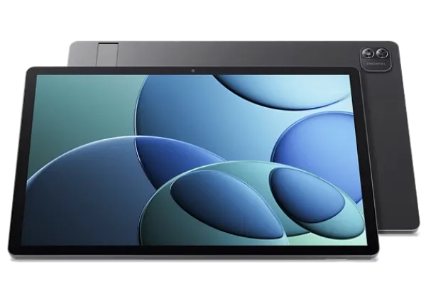
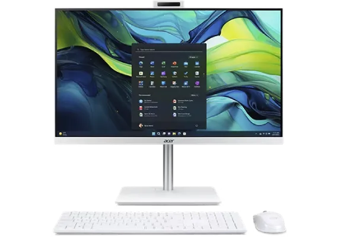
تعمیر کامپیوتر ایسر
نمایندگی تعمیرات ایسر با سال ها تجربه در ارائه خدمات تخصصی برای محصولات متنوع این برند، آمادگی پشتیبانی از انواع کامپیوترهای دسکتاپ و All in One را دارد. این مجموعه، با برخورداری از ابزارهای پیشرفته و کارگاه های مجهز، فضایی حرفه ای برای بررسی، تشخیص و پیگیری مشکلات سخت افزاری و نرم افزاری کامپیوترهای ایسر فراهم کرده است.
کارشناسان ما در نمایندگی ایسر تهران، با تسلط کامل بر ساختار محصولات دسکتاپ این برند، فرآیند تعمیر، بازسازی و بهینه سازی دستگاه ها را تحت نظارت مستقیم و در چارچوب استانداردهای برند Acer انجام می دهند. هدف ما ارائه خدمات با کیفیت، شفاف و قابل پیگیری برای کلیه کاربران محصولات ایسر است؛ چه در زمینه بازیابی عملکرد دستگاه، چه به روزرسانی سیستم عامل یا ارتقاء نرم افزاری.
نمایندگی مجاز ایسر تلاش می کند با پوشش خدماتی جامع برای محصولات اداری، خانگی و حرفه ای این برند، پشتیبانی برندمحور و مستمر از کاربران خود در سراسر تهران و سایر شهرها فراهم کند. چه کاربران نیاز به نصب نرم افزارهای پایه داشته باشند، چه به دنبال بررسی تخصصی عملکرد قطعات داخلی باشند، تیم فنی این مرکز آماده ی پاسخگویی و همراهی با آن ها در کوتاه ترین زمان ممکن است.
تعمیر ویدئو پروژکتور ایسر
ویدئو پروژکتورهای ایسر به عنوان بخشی از محصولات دیجیتال این برند، نیازمند پشتیبانی تخصصی و هماهنگ با ساختار رسمی خود هستند. در همین راستا، نمایندگی تعمیرات ایسر با فراهم سازی تیمی مجرب و تجهیزات روز، نقش اصلی در پشتیبانی و رسیدگی به درخواست های مرتبط با این دسته از محصولات ایفا می کند. این مجموعه تلاش دارد تا کاربران ویدئو پروژکتورهای نیز همانند سایر دارندگان محصولات Acer، تجربه ای امن، مطمئن و حرفه ای از خدمات پس از فروش داشته باشند.
لازم به ذکر است که یکی از عمده خرابی های رایج پروژکتورهای ایسر، مربوط به خرابی لامپ آن ها میباشد، این لامپ ها معمولا دارای عمر مفید 2000 ساعت میباشند، اما بعد از گذشت این مدت زمان با مشکلاتی همچون کم شدن نور مواجه میشوید. در صورت مواجه با این مشکل بهترین راهکار تعویض سریع لامپ پروژکتور ایسر میباشد که برای اینکار میتوانید به مرکز تعمیرات برتر سرویس مراجعه نمایید و در سریع ترین زمان ممکن نسبت به تعویض لامپ آن اقدام نمایید تا از بروز حوادثی همچون ترکیدن لامپ پروژکتور و آسیب به سایر قطعات جلوگیری نمایید.
همچنین دقت داشته باشید برای تعویض لامپ و سایر خدمات مربوط به تعمیر پروژکتور ایسر خود میتوانید از طریق شماره تماس 02191300348 با ما در تماس باشید تا از خدماتی همچون مشاوره تلفنی رایگان و پیک رایگان تعمیرات در تهران بهرمند شوید و دیگر نیازی به مراجعه حضوری به شعب برتر سرویس نداشته باشید.
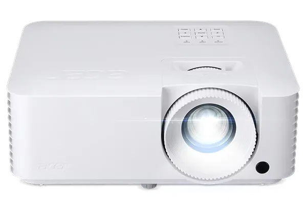
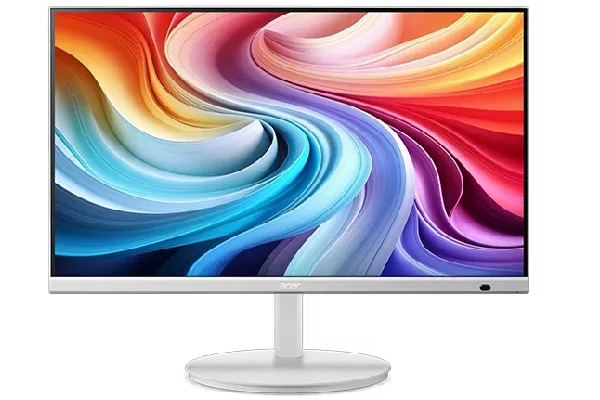
تعمیر مانیتور ایسر
در نمایندگی تعمیرات ایسر، ارائه خدمات تخصصی برای مانیتورهای هوشمند این برند نیز در دستور کار قرار دارد. این مجموعه با بهره گیری از دانش فنی کارشناسان باتجربه و تجهیزات سازگار با استانداردهای کمپانی Acer، شرایطی را فراهم کرده تا کاربران بتوانند از خدمات قابل اعتماد برای دستگاه های مانیتور خود بهره مند شوند. پشتیبانی از صفحه نمایش گرهای ایسر، بخشی از مأموریت گسترده نمایندگی در پوشش جامع محصولات این برند محسوب می شود.
در این مرکز، هرگونه رسیدگی به مشکلات مانیتور ایسر، با رعایت اصول فنی، استفاده از قطعات اورجینال و بر اساس پروتکل های تعیین شده برند انجام می شود. کاربرانی که نیاز به تعویض قطعه یا بررسی سخت افزاری دستگاه خود دارند، می توانند با اطمینان خاطر از اصل بودن قطعات و مهارت تکنسین های مجموعه، صفحه نمایش خود را به نمایندگی واگذار کنند. هدف ما، بازگرداندن دستگاه به وضعیت پایدار و قابل استفاده با بالاترین سطح کیفیت و دقت است.
سوالات متداول نمایندگی تعمیرات ایسر
آیا پیک رایگان در تمام تهران دارید؟
بله، در تمام مناطق تهران امکان ارسال و دریافت دستگاه با پیک رایگان فراهم است.
هزینه تعمیرات ایسر چگونه مشخص میشود؟
پس از عیب یابی تخصصی، هزینه و زمان تعمیر اعلام میشود و با تأیید شما انجام خواهد شد.
آیا خدمات شامل گارانتی است؟
بله، تمام تعمیرات (طبق شرایط) با گارانتی کتبی ارائه میشوند.
از قطعات اورجینال استفاده میکنید؟
در صورت نیاز به تعویض قطعه، از قطعات اورجینال و سازگار با مدل دستگاه استفاده میشود.
چقدر زمان میبرد تا لپ تاپ تعمیر شود؟
بسته به نوع ایراد و مدل دستگاه متفاوت است؛ پس از عیبیابی زمان دقیق اعلام میشود.
علت روشن نشدن تبلت ایسر چیست؟
در گام اول میتوانید میزان شارژ آن را چک کنید و یا اینکه سخت افزار یا نرم افزار بایستی چک شود و در موارد دیگر اینکه خرابی دکمه روشن خاموش آن را بررسی نمائید و اگر این موارد نبود بایستی به برتر سرویس مراجعه کنید.
چرا کامپیوتر های ایسر داغ میکند؟
از علت های آن میتواند خنک نبودن قطعه سی پی یو اشاره کرد و یا اینکه چیپست ماردبرد مشکل پیدا کرده است و در کل بایستی چک کنید سیستم در جای گرم نباشد هنگام روشن شدن.
چرا ساعت هوشمند ایسر روشن نمیشود؟
یکی از علتهای آن می تواند اتمام باتری باشد که سعی کنید آن را شارژ کنید و اگر باز هم روشن نشد شارژر را تغییر دهید و در نهایت اگر باز هم مشکل برطرف نشد دستگاه باید دوباره راه اندازی شود.
آیا نمایندگی ایسر از قطعات اصلی استفاده میکند؟
بله! تمامی قطعات استفاده شده برای تعمیر در نمایندگی ایسر تهران توسط خود شرکت Acer تولید و برای نمایندگی ما در ایران ارسال میشود.
چگونه میتوانم با نمایندگی ایسر ارتباط بگیرم؟
برای برقرار ارتباط با نمایندگی ایسر در تهران میتوانید با شماره 91300348-021 تماس حاصل فرمایید و یا به صورت حضوری به یکی از شعب ما مراجعه کنید.